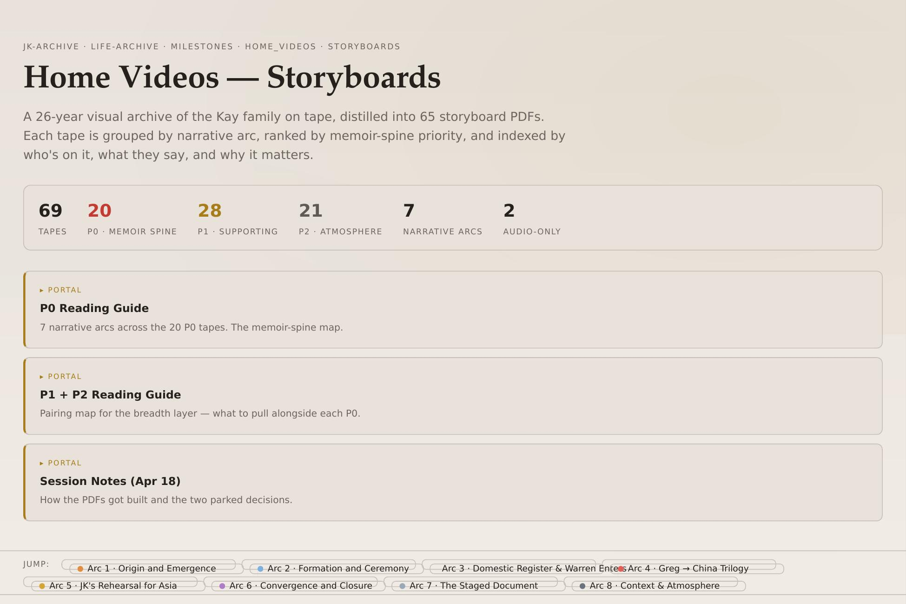
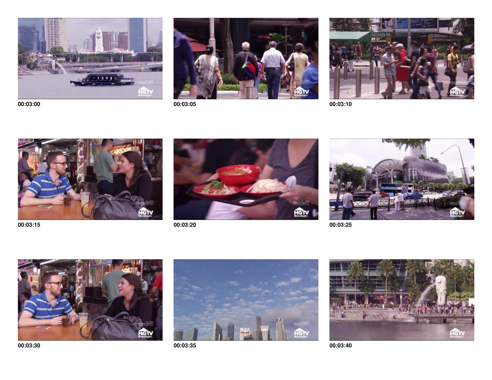
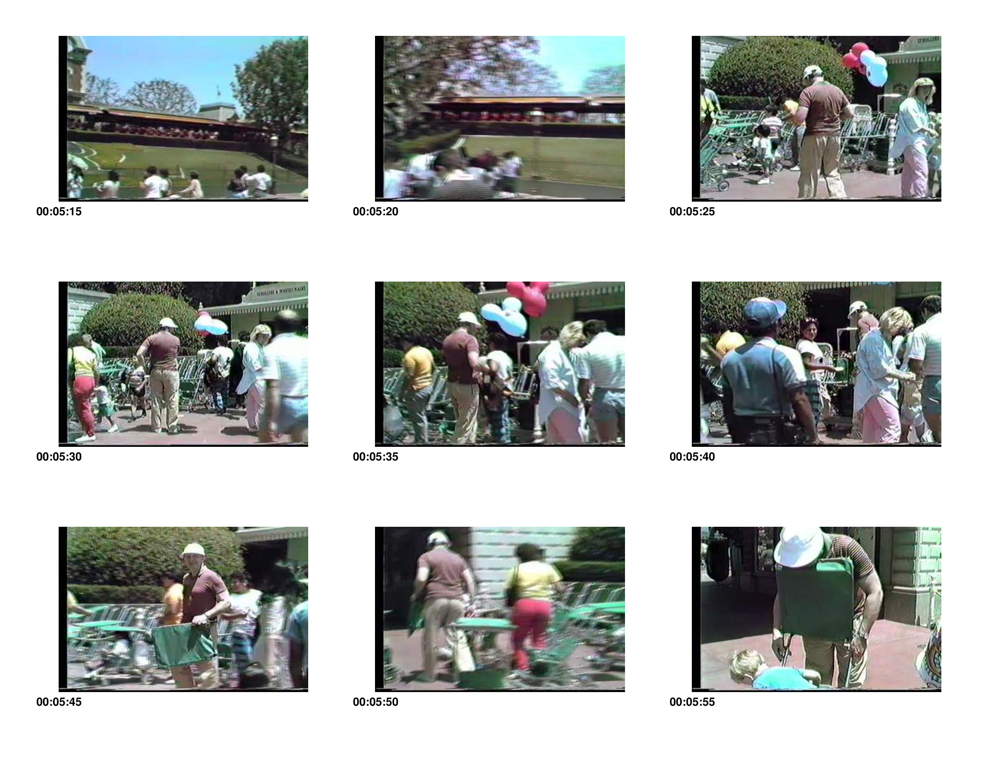

A few months ago I started excavating my own archive. Not to get organized. Because there was a story I could feel but couldn't yet articulate.
Here's what turned out to be in there. More than forty thousand photographs spanning three decades. Close to seventy digitized home video tapes, roughly forty gigabytes of footage, from childhood birthday parties to trips across Asia to scenes I have no memory of at all. Over a hundred audio recordings: late-night fragments, travel observations, scene ideas, things I said to myself at 2am that I wanted to remember. Scanned physical prints. Family documents. Genealogy records. Correspondence I'd never organized.
I'm still going through it.
That last part matters. The version of this story I see told most often, the “AI helped someone inventory their life” version, misses what actually happened. I didn't ask AI to take stock of what I had. I asked it to help me find the thing I was already looking for.
That distinction is the whole thing.
Starting from the story, not the format
The project started because of a creative impulse. There's something I want to make. A novel, maybe, or a film, or something I don't have a name for yet. The format is genuinely undecided. But the material. The emotional center of it, the era, the people, the texture of certain years. I could feel all of that before I could see it clearly.
So I worked backward. Instead of asking “what do I have?” I asked: what would this story need? What moments, what voices, what evidence of a particular kind of life would actually matter?
It was a better question.

What the excavation actually looked like
For the home videos, I built a searchable dashboard covering all the tapes. Visual storyboards for each one, scene-by-scene frame grids with timecodes, organized into tiers I'm calling Essential, Important, and Atmosphere. The Essential tapes contain scenes I already knew I needed. The Atmosphere ones I hadn't thought to prioritize: the tapes where nothing “important” happens, but they set the texture of an era — background noise, ambient life, the way a room looked in a particular decade. They mattered more than I'd expected.
For the audio recordings, I ran everything through a transcription pipeline and built a running index of narrative threads across all of them. Recurring people, recurring preoccupations, questions I kept returning to in different forms across different years. There's a separate document of just the passages that landed on their own terms, the ones that already had sentences in them.
The recordings span a decade. Late-night reflections recorded alone in an apartment. Ambient captures from cities I was only briefly passing through. Work meetings from the pharmaceutical industry that held entire scenes inside them. Travel recordings from Myanmar, Perth, and Chennai. A lot of it I'd forgotten I'd made until I started going through it again.
The photographs are in a searchable database I'm still building. More than four thousand rows so far, indexed by geography, date, people, and source. There's still a backlog.
What I learned from building these tools: I didn't know what I had until I could navigate it. The inventory wasn't the goal. The inventory made navigation possible. Navigation made the story visible.

(One footnote here, for those who know the reference: some of that Singapore archive comes from a certain cable television real estate show. More on that soon.)
What AI was actually useful for
Not for summarizing. Not for organizing automatically. Not for telling me what mattered.
It was useful for refining questions. For building tools I couldn't build myself; I'm not a coder. For being a thinking partner when I had a half-formed instinct about something and needed to stress-test it.
The most productive sessions were the ones where I came in with something specific. “What do these five tapes have in common?” “What places show up most across the audio recordings?” “Help me design a storyboard format that shows both the scene and its potential significance.” The least productive were the ones where I was fishing. Where I didn't yet have a point of view.
This is not a criticism of the tool. It's a description of how this kind of work actually goes. You need to come with something. The AI helps you develop it, sharpen it, see it from an angle you hadn't considered. But “something” is your job.
A lot of the current discourse treats the prompt as the skill. Get the prompt right and the output follows. In my experience, the skill is upstream of the prompt. It's knowing what you're looking for before you look. It's having a point of view on the material before you ask anyone, or anything, to help you develop it.
Why this connects to client work
Story first, format later is not a slogan. It's the actual process.
When I work with clients, the most common mistake I see is leading with format. We need a video, we need a campaign, we need a launch. What they usually mean is: something happened here that matters, and we need people to feel that. The format is downstream. The story has to come first.
What I've been doing in my own archive is a version of the same thing. I don't know yet if what I'm making is a novel or a film or something else. But I know the story. And that's enough to keep going.
